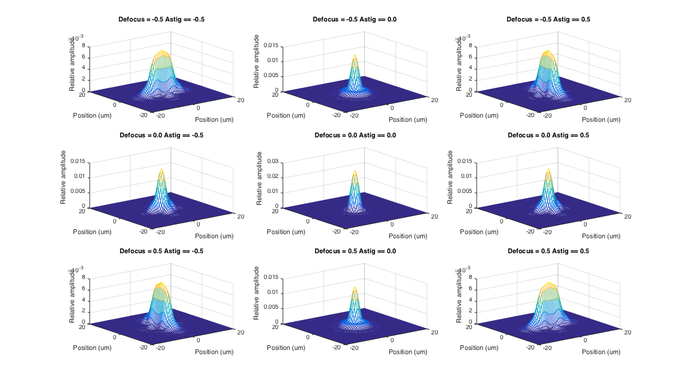

t_wvfAstigmatism
Compute the wavefront-based PSF for various astigmatism and blur levels.
This illustrates the effect of Zernicke coefficients 4 and 5.
(c) Wavefront Toolbox Team, 2012
Contents
Initialize and set parameters
s_initISET;
Ranges for plotting
maxMIN = 2; maxMM = 1; maxUM = 20;
Set up default parameters structure with diffraction limited default
wvfP = wvfCreate;
wvfParams = wvfComputePSF(wvfP);
z = wvfGet(wvfParams,'zcoeffs');
z4 = -0.5:0.5:0.5; z5 = -0.5:0.5:0.5;
[Z4,Z5] = meshgrid(z4,z5);
Zvals = [Z4(:), Z5(:)];
Alter defocus and astigmatism
Make a plot of the psf for each case.
h = vcNewGraphWin; set(h,'Position',[0.5 0.5 0.45 0.45]); wList = wvfGet(wvfParams,'calc wave'); for ii=1:size(Zvals,1) wvfParams = wvfSet(wvfParams,'zcoeffs',Zvals(ii,:),{'defocus' 'vertical_astigmatism'}); wvfParams = wvfComputePSF(wvfParams); % Don't open a new window with each plot. Let them accumulate in the % subplots. subplot(3,3,ii) wvfPlot(wvfParams,'2d psf space','um',wList,maxUM,'nowindow'); title(sprintf('Defocus = %.1f Astig == %.1f\n',Zvals(ii,1),Zvals(ii,2))); end